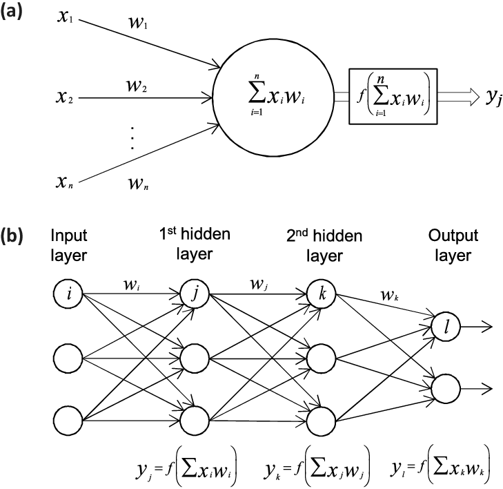

Week 41 Neural networks and constructing a neural network code
Contents
Week 41 Neural networks and constructing a neural network code
Morten Hjorth-Jensen, Department of Physics, University of Oslo
Date: Week 41
Material for the lecture on Monday October 7, 2024
Neural Networks, setting up the basic steps, from the simple perceptron model to the multi-layer perceptron model.
Building our own Feed-forward Neural Network
Readings and Videos:
These lecture notes
Rashcka et al chapter 11
For neural networks we recommend Goodfellow et al chapter 6.
a. Neural Networks demystified at https://www.youtube.com/watch?v=bxe2T-V8XRs&list=PLiaHhY2iBX9hdHaRr6b7XevZtgZRa1PoU&ab_channel=WelchLabs
Building Neural Networks from scratch at https://www.youtube.com/watch?v=Wo5dMEP_BbI&list=PLQVvvaa0QuDcjD5BAw2DxE6OF2tius3V3&ab_channel=sentdex
Video on Neural Networks at https://www.youtube.com/watch?v=CqOfi41LfDw
Video on the back propagation algorithm at https://www.youtube.com/watch?v=Ilg3gGewQ5U
We also recommend Michael Nielsens intuitive approach to the neural networks and the universal approximation theorem, see the slides at http://neuralnetworksanddeeplearning.com/chap4.html.
Material for the active learning sessions on Tuesday and Wednesday
Exercise on writing your own stochastic gradient and gradient descent codes. This exercise continues next week with studies of automatic differentiation
One lecture at the beginning of each session on the material from weeks 39 and 40 and how to write your own gradient descent code
Discussion of project 2
Your task before the sessions: revisit the material from weeks 39 and 40 and in particular the material from week 40 on stochastic gradient descent
Introduction to Neural networks
Artificial neural networks are computational systems that can learn to perform tasks by considering examples, generally without being programmed with any task-specific rules. It is supposed to mimic a biological system, wherein neurons interact by sending signals in the form of mathematical functions between layers. All layers can contain an arbitrary number of neurons, and each connection is represented by a weight variable.
Artificial neurons
The field of artificial neural networks has a long history of development, and is closely connected with the advancement of computer science and computers in general. A model of artificial neurons was first developed by McCulloch and Pitts in 1943 to study signal processing in the brain and has later been refined by others. The general idea is to mimic neural networks in the human brain, which is composed of billions of neurons that communicate with each other by sending electrical signals. Each neuron accumulates its incoming signals, which must exceed an activation threshold to yield an output. If the threshold is not overcome, the neuron remains inactive, i.e. has zero output.
This behaviour has inspired a simple mathematical model for an artificial neuron.
Here, the output \(y\) of the neuron is the value of its activation function, which have as input a weighted sum of signals \(x_i, \dots ,x_n\) received by \(n\) other neurons.
Conceptually, it is helpful to divide neural networks into four categories:
general purpose neural networks for supervised learning,
neural networks designed specifically for image processing, the most prominent example of this class being Convolutional Neural Networks (CNNs),
neural networks for sequential data such as Recurrent Neural Networks (RNNs), and
neural networks for unsupervised learning such as Deep Boltzmann Machines.
In natural science, DNNs and CNNs have already found numerous applications. In statistical physics, they have been applied to detect phase transitions in 2D Ising and Potts models, lattice gauge theories, and different phases of polymers, or solving the Navier-Stokes equation in weather forecasting. Deep learning has also found interesting applications in quantum physics. Various quantum phase transitions can be detected and studied using DNNs and CNNs, topological phases, and even non-equilibrium many-body localization. Representing quantum states as DNNs quantum state tomography are among some of the impressive achievements to reveal the potential of DNNs to facilitate the study of quantum systems.
In quantum information theory, it has been shown that one can perform gate decompositions with the help of neural.
The applications are not limited to the natural sciences. There is a plethora of applications in essentially all disciplines, from the humanities to life science and medicine.
Neural network types
An artificial neural network (ANN), is a computational model that consists of layers of connected neurons, or nodes or units. We will refer to these interchangeably as units or nodes, and sometimes as neurons.
It is supposed to mimic a biological nervous system by letting each neuron interact with other neurons by sending signals in the form of mathematical functions between layers. A wide variety of different ANNs have been developed, but most of them consist of an input layer, an output layer and eventual layers in-between, called hidden layers. All layers can contain an arbitrary number of nodes, and each connection between two nodes is associated with a weight variable.
Neural networks (also called neural nets) are neural-inspired nonlinear models for supervised learning. As we will see, neural nets can be viewed as natural, more powerful extensions of supervised learning methods such as linear and logistic regression and soft-max methods we discussed earlier.
Feed-forward neural networks
The feed-forward neural network (FFNN) was the first and simplest type of ANNs that were devised. In this network, the information moves in only one direction: forward through the layers.
Nodes are represented by circles, while the arrows display the connections between the nodes, including the direction of information flow. Additionally, each arrow corresponds to a weight variable (figure to come). We observe that each node in a layer is connected to all nodes in the subsequent layer, making this a so-called fully-connected FFNN.
Convolutional Neural Network
A different variant of FFNNs are convolutional neural networks (CNNs), which have a connectivity pattern inspired by the animal visual cortex. Individual neurons in the visual cortex only respond to stimuli from small sub-regions of the visual field, called a receptive field. This makes the neurons well-suited to exploit the strong spatially local correlation present in natural images. The response of each neuron can be approximated mathematically as a convolution operation. (figure to come)
Convolutional neural networks emulate the behaviour of neurons in the visual cortex by enforcing a local connectivity pattern between nodes of adjacent layers: Each node in a convolutional layer is connected only to a subset of the nodes in the previous layer, in contrast to the fully-connected FFNN. Often, CNNs consist of several convolutional layers that learn local features of the input, with a fully-connected layer at the end, which gathers all the local data and produces the outputs. They have wide applications in image and video recognition.
Recurrent neural networks
So far we have only mentioned ANNs where information flows in one direction: forward. Recurrent neural networks on the other hand, have connections between nodes that form directed cycles. This creates a form of internal memory which are able to capture information on what has been calculated before; the output is dependent on the previous computations. Recurrent NNs make use of sequential information by performing the same task for every element in a sequence, where each element depends on previous elements. An example of such information is sentences, making recurrent NNs especially well-suited for handwriting and speech recognition.
Other types of networks
There are many other kinds of ANNs that have been developed. One type that is specifically designed for interpolation in multidimensional space is the radial basis function (RBF) network. RBFs are typically made up of three layers: an input layer, a hidden layer with non-linear radial symmetric activation functions and a linear output layer (linear here means that each node in the output layer has a linear activation function). The layers are normally fully-connected and there are no cycles, thus RBFs can be viewed as a type of fully-connected FFNN. They are however usually treated as a separate type of NN due the unusual activation functions.
Multilayer perceptrons
One uses often so-called fully-connected feed-forward neural networks with three or more layers (an input layer, one or more hidden layers and an output layer) consisting of neurons that have non-linear activation functions.
Such networks are often called multilayer perceptrons (MLPs).
Why multilayer perceptrons?
According to the Universal approximation theorem, a feed-forward neural network with just a single hidden layer containing a finite number of neurons can approximate a continuous multidimensional function to arbitrary accuracy, assuming the activation function for the hidden layer is a non-constant, bounded and monotonically-increasing continuous function.
Note that the requirements on the activation function only applies to the hidden layer, the output nodes are always assumed to be linear, so as to not restrict the range of output values.
Illustration of a single perceptron model and a multi-perceptron model

Figure 1: In a) we show a single perceptron model while in b) we dispay a network with two hidden layers, an input layer and an output layer.
Examples of XOR, OR and AND gates
Let us first try to fit various gates using standard linear regression. The gates we are thinking of are the classical XOR, OR and AND gates, well-known elements in computer science. The tables here show how we can set up the inputs \(x_1\) and \(x_2\) in order to yield a specific target \(y_i\).
"""
Simple code that tests XOR, OR and AND gates with linear regression
"""
import numpy as np
# Design matrix
X = np.array([ [1, 0, 0], [1, 0, 1], [1, 1, 0],[1, 1, 1]],dtype=np.float64)
print(f"The X.TX matrix:{X.T @ X}")
Xinv = np.linalg.pinv(X.T @ X)
print(f"The invers of X.TX matrix:{Xinv}")
# The XOR gate
yXOR = np.array( [ 0, 1 ,1, 0])
ThetaXOR = Xinv @ X.T @ yXOR
print(f"The values of theta for the XOR gate:{ThetaXOR}")
print(f"The linear regression prediction for the XOR gate:{X @ ThetaXOR}")
# The OR gate
yOR = np.array( [ 0, 1 ,1, 1])
ThetaOR = Xinv @ X.T @ yOR
print(f"The values of theta for the OR gate:{ThetaOR}")
print(f"The linear regression prediction for the OR gate:{X @ ThetaOR}")
# The OR gate
yAND = np.array( [ 0, 0 ,0, 1])
ThetaAND = Xinv @ X.T @ yAND
print(f"The values of theta for the AND gate:{ThetaAND}")
print(f"The linear regression prediction for the AND gate:{X @ ThetaAND}")
The X.TX matrix:[[4. 2. 2.]
[2. 2. 1.]
[2. 1. 2.]]
The invers of X.TX matrix:[[ 7.50000000e-01 -5.00000000e-01 -5.00000000e-01]
[-5.00000000e-01 1.00000000e+00 -2.27693602e-16]
[-5.00000000e-01 9.94484047e-17 1.00000000e+00]]
The values of theta for the XOR gate:[ 5.00000000e-01 -2.22044605e-16 -1.11022302e-16]
The linear regression prediction for the XOR gate:[0.5 0.5 0.5 0.5]
The values of theta for the OR gate:[0.25 0.5 0.5 ]
The linear regression prediction for the OR gate:[0.25 0.75 0.75 1.25]
The values of theta for the AND gate:[-0.25 0.5 0.5 ]
The linear regression prediction for the AND gate:[-0.25 0.25 0.25 0.75]
What is happening here?
Does Logistic Regression do a better Job?
%matplotlib inline
"""
Simple code that tests XOR and OR gates with linear regression
and logistic regression
"""
import matplotlib.pyplot as plt
from sklearn.linear_model import LogisticRegression
import numpy as np
# Design matrix
X = np.array([ [1, 0, 0], [1, 0, 1], [1, 1, 0],[1, 1, 1]],dtype=np.float64)
print(f"The X.TX matrix:{X.T @ X}")
Xinv = np.linalg.pinv(X.T @ X)
print(f"The invers of X.TX matrix:{Xinv}")
# The XOR gate
yXOR = np.array( [ 0, 1 ,1, 0])
ThetaXOR = Xinv @ X.T @ yXOR
print(f"The values of theta for the XOR gate:{ThetaXOR}")
print(f"The linear regression prediction for the XOR gate:{X @ ThetaXOR}")
# The OR gate
yOR = np.array( [ 0, 1 ,1, 1])
ThetaOR = Xinv @ X.T @ yOR
print(f"The values of theta for the OR gate:{ThetaOR}")
print(f"The linear regression prediction for the OR gate:{X @ ThetaOR}")
# The OR gate
yAND = np.array( [ 0, 0 ,0, 1])
ThetaAND = Xinv @ X.T @ yAND
print(f"The values of theta for the AND gate:{ThetaAND}")
print(f"The linear regression prediction for the AND gate:{X @ ThetaAND}")
# Now we change to logistic regression
# Logistic Regression
logreg = LogisticRegression()
logreg.fit(X, yOR)
print("Test set accuracy with Logistic Regression for OR gate: {:.2f}".format(logreg.score(X,yOR)))
logreg.fit(X, yXOR)
print("Test set accuracy with Logistic Regression for XOR gate: {:.2f}".format(logreg.score(X,yXOR)))
logreg.fit(X, yAND)
print("Test set accuracy with Logistic Regression for AND gate: {:.2f}".format(logreg.score(X,yAND)))
The X.TX matrix:[[4. 2. 2.]
[2. 2. 1.]
[2. 1. 2.]]
The invers of X.TX matrix:[[ 7.50000000e-01 -5.00000000e-01 -5.00000000e-01]
[-5.00000000e-01 1.00000000e+00 -2.27693602e-16]
[-5.00000000e-01 9.94484047e-17 1.00000000e+00]]
The values of theta for the XOR gate:[ 5.00000000e-01 -2.22044605e-16 -1.11022302e-16]
The linear regression prediction for the XOR gate:[0.5 0.5 0.5 0.5]
The values of theta for the OR gate:[0.25 0.5 0.5 ]
The linear regression prediction for the OR gate:[0.25 0.75 0.75 1.25]
The values of theta for the AND gate:[-0.25 0.5 0.5 ]
The linear regression prediction for the AND gate:[-0.25 0.25 0.25 0.75]
Test set accuracy with Logistic Regression for OR gate: 0.75
Test set accuracy with Logistic Regression for XOR gate: 0.50
Test set accuracy with Logistic Regression for AND gate: 0.75
Not exactly impressive, but somewhat better.
Adding Neural Networks
# and now neural networks with Scikit-Learn and the XOR
from sklearn.neural_network import MLPClassifier
from sklearn.datasets import make_classification
X, yXOR = make_classification(n_samples=100, random_state=1)
FFNN = MLPClassifier(random_state=1, max_iter=300).fit(X, yXOR)
FFNN.predict_proba(X)
print(f"Test set accuracy with Feed Forward Neural Network for XOR gate:{FFNN.score(X, yXOR)}")
Test set accuracy with Feed Forward Neural Network for XOR gate:1.0
Mathematics of deep learning
Two recent books online.
Reading recommendations
Rashkca et al., chapter 11, jupyter-notebook sent separately, from GitHub
Goodfellow et al, chapter 6 and 7 contain most of the neural network background.
Mathematics of deep learning and neural networks
Neural networks, in its so-called feed-forward form, where each iterations contains a feed-forward stage and a back-propgagation stage, consist of series of affine matrix-matrix and matrix-vector multiplications. The unknown parameters (the so-called biases and weights which deternine the architecture of a neural network), are uptaded iteratively using the so-called back-propagation algorithm. This algorithm corresponds to the so-called reverse mode of automatic differentation.
Basics of an NN
A neural network consists of a series of hidden layers, in addition to the input and output layers. Each layer \(l\) has a set of parameters \(\boldsymbol{\Theta}^{(l)}=(\boldsymbol{W}^{(l)},\boldsymbol{b}^{(l)})\) which are related to the parameters in other layers through a series of affine transformations, for a standard NN these are matrix-matrix and matrix-vector multiplications. For all layers we will simply use a collective variable \(\boldsymbol{\Theta}\).
It consist of two basic steps:
a feed forward stage which takes a given input and produces a final output which is compared with the target values through our cost/loss function.
a back-propagation state where the unknown parameters \(\boldsymbol{\Theta}\) are updated through the optimization of the their gradients. The expressions for the gradients are obtained via the chain rule, starting from the derivative of the cost/function.
These two steps make up one iteration. This iterative process is continued till we reach an eventual stopping criterion.
Overarching view of a neural network
The architecture of a neural network defines our model. This model aims at describing some function \(f(\boldsymbol{x}\) which represents some final result (outputs or tagrget values) given a specific inpput \(\boldsymbol{x}\). Note that here \(\boldsymbol{y}\) and \(\boldsymbol{x}\) are not limited to be vectors.
The architecture consists of
An input and an output layer where the input layer is defined by the inputs \(\boldsymbol{x}\). The output layer produces the model ouput \(\boldsymbol{\tilde{y}}\) which is compared with the target value \(\boldsymbol{y}\)
A given number of hidden layers and neurons/nodes/units for each layer (this may vary)
A given activation function \(\sigma(\boldsymbol{z})\) with arguments \(\boldsymbol{z}\) to be defined below. The activation functions may differ from layer to layer.
The last layer, normally called output layer has normally an activation function tailored to the specific problem
Finally we define a so-called cost or loss function which is used to gauge the quality of our model.
The optimization problem
The cost function is a function of the unknown parameters \(\boldsymbol{\Theta}\) where the latter is a container for all possible parameters needed to define a neural network
If we are dealing with a regression task a typical cost/loss function is the mean squared error
This function represents one of many possible ways to define the so-called cost function. Note that here we have assumed a linear dependence in terms of the paramters \(\boldsymbol{\Theta}\). This is in general not the case.
Parameters of neural networks
For neural networks the parameters \(\boldsymbol{\Theta}\) are given by the so-called weights and biases (to be defined below).
The weights are given by matrix elements \(w_{ij}^{(l)}\) where the superscript indicates the layer number. The biases are typically given by vector elements representing each single node of a given layer, that is \(b_j^{(l)}\).
Other ingredients of a neural network
Having defined the architecture of a neural network, the optimization of the cost function with respect to the parameters \(\boldsymbol{\Theta}\), involves the calculations of gradients and their optimization. The gradients represent the derivatives of a multidimensional object and are often approximated by various gradient methods, including
various quasi-Newton methods,
plain gradient descent (GD) with a constant learning rate \(\eta\),
GD with momentum and other approximations to the learning rates such as
Adapative gradient (ADAgrad)
Root mean-square propagation (RMSprop)
Adaptive gradient with momentum (ADAM) and many other
Stochastic gradient descent and various families of learning rate approximations
Other parameters
In addition to the above, there are often additional hyperparamaters which are included in the setup of a neural network. These will be discussed below.
Universal approximation theorem
The universal approximation theorem plays a central role in deep learning. Cybenko (1989) showed the following:
Let \(\sigma\) be any continuous sigmoidal function such that
Given a continuous and deterministic function \(F(\boldsymbol{x})\) on the unit cube in \(d\)-dimensions \(F\in [0,1]^d\), \(x\in [0,1]^d\) and a parameter \(\epsilon >0\), there is a one-layer (hidden) neural network \(f(\boldsymbol{x};\boldsymbol{\Theta})\) with \(\boldsymbol{\Theta}=(\boldsymbol{W},\boldsymbol{b})\) and \(\boldsymbol{W}\in \mathbb{R}^{m\times n}\) and \(\boldsymbol{b}\in \mathbb{R}^{n}\), for which
Some parallels from real analysis
For those of you familiar with for example the Stone-Weierstrass theorem for polynomial approximations or the convergence criterion for Fourier series, there are similarities in the derivation of the proof for neural networks.
The approximation theorem in words
Any continuous function \(y=F(\boldsymbol{x})\) supported on the unit cube in \(d\)-dimensions can be approximated by a one-layer sigmoidal network to arbitrary accuracy.
Hornik (1991) extended the theorem by letting any non-constant, bounded activation function to be included using that the expectation value
Then we have
More on the general approximation theorem
None of the proofs give any insight into the relation between the number of of hidden layers and nodes and the approximation error \(\epsilon\), nor the magnitudes of \(\boldsymbol{W}\) and \(\boldsymbol{b}\).
Neural networks (NNs) have what we may call a kind of universality no matter what function we want to compute.
It does not mean that an NN can be used to exactly compute any function. Rather, we get an approximation that is as good as we want.
Class of functions we can approximate
The class of functions that can be approximated are the continuous ones. If the function \(F(\boldsymbol{x})\) is discontinuous, it wont in general be possible to approximate it. However, an NN may still give an approximation even if we fail in some points.
Setting up the equations for a neural network
The questions we want to ask are how do changes in the biases and the weights in our network change the cost function and how can we use the final output to modify the weights and biases?
To derive these equations let us start with a plain regression problem and define our cost function as
where the \(y_i\)s are our \(n\) targets (the values we want to reproduce), while the outputs of the network after having propagated all inputs \(\boldsymbol{x}\) are given by \(\boldsymbol{\tilde{y}}_i\).

Definitions
With our definition of the targets \(\boldsymbol{y}\), the outputs of the network \(\boldsymbol{\tilde{y}}\) and the inputs \(\boldsymbol{x}\) we define now the activation \(z_j^l\) of node/neuron/unit \(j\) of the \(l\)-th layer as a function of the bias, the weights which add up from the previous layer \(l-1\) and the forward passes/outputs \(\hat{a}^{l-1}\) from the previous layer as
where \(b_k^l\) are the biases from layer \(l\). Here \(M_{l-1}\) represents the total number of nodes/neurons/units of layer \(l-1\). The figure in the whiteboard notes illustrates this equation. We can rewrite this in a more compact form as the matrix-vector products we discussed earlier,
Inputs to the activation function
With the activation values \(\boldsymbol{z}^l\) we can in turn define the output of layer \(l\) as \(\boldsymbol{a}^l = f(\boldsymbol{z}^l)\) where \(f\) is our activation function. In the examples here we will use the sigmoid function discussed in our logistic regression lectures. We will also use the same activation function \(f\) for all layers and their nodes. It means we have
Derivatives and the chain rule
From the definition of the activation \(z_j^l\) we have
and
With our definition of the activation function we have that (note that this function depends only on \(z_j^l\))
Derivative of the cost function
With these definitions we can now compute the derivative of the cost function in terms of the weights.
Let us specialize to the output layer \(l=L\). Our cost function is
The derivative of this function with respect to the weights is
The last partial derivative can easily be computed and reads (by applying the chain rule)
Simpler examples first, and automatic differentiation
In order to understand the back propagation algorithm and its derivation (an implementation of the chain rule), let us first digress with some simple examples. These examples are also meant to motivate the link with back propagation and automatic differentiation.
Reminder on the chain rule and gradients
If we have a multivariate function \(f(x,y)\) where \(x=x(t)\) and \(y=y(t)\) are functions of a variable \(t\), we have that the gradient of \(f\) with respect to \(t\) (without the explicit unit vector components)
Multivariable functions
If we have a multivariate function \(f(x,y)\) where \(x=x(t,s)\) and \(y=y(t,s)\) are functions of the variables \(t\) and \(s\), we have that the partial derivatives
and
the gradient of \(f\) with respect to \(t\) and \(s\) (without the explicit unit vector components)
Automatic differentiation through examples
A great introduction to automatic differentiation is given by Baydin et al., see https://arxiv.org/abs/1502.05767.
Automatic differentiation is a represented by a repeated application of the chain rule on well-known functions and allows for the calculation of derivatives to numerical precision. It is not the same as the calculation of symbolic derivatives via for example SymPy, nor does it use approximative formulae based on Taylor-expansions of a function around a given value. The latter are error prone due to truncation errors and values of the step size \(\Delta\).
Simple example
Our first example is rather simple,
with derivative
We can use SymPy to extract the pertinent lines of Python code through the following simple example
from __future__ import division
from sympy import *
x = symbols('x')
expr = exp(x*x)
simplify(expr)
derivative = diff(expr,x)
print(python(expr))
print(python(derivative))
x = Symbol('x')
e = exp(x**2)
x = Symbol('x')
e = 2*x*exp(x**2)
Smarter way of evaluating the above function
If we study this function, we note that we can reduce the number of operations by introducing an intermediate variable
leading to
We now assume that all operations can be counted in terms of equal floating point operations. This means that in order to calculate \(f(x)\) we need first to square \(x\) and then compute the exponential. We have thus two floating point operations only.
Reducing the number of operations
With the introduction of a precalculated quantity \(a\) and thereby \(f(x)\) we have that the derivative can be written as
which reduces the number of operations from four in the orginal expression to two. This means that if we need to compute \(f(x)\) and its derivative (a common task in optimizations), we have reduced the number of operations from six to four in total.
Note that the usage of a symbolic software like SymPy does not include such simplifications and the calculations of the function and the derivatives yield in general more floating point operations.
Chain rule, forward and reverse modes
In the above example we have introduced the variables \(a\) and \(b\), and our function is
with \(a=x^2\). We can decompose the derivative of \(f\) with respect to \(x\) as
We note that since \(b=f(x)\) that
leading to
as before.
Forward and reverse modes
We have that
which we can rewrite either as
or
The first expression is called reverse mode (or back propagation) since we start by evaluating the derivatives at the end point and then propagate backwards. This is the standard way of evaluating derivatives (gradients) when optimizing the parameters of a neural network. In the context of deep learning this is computationally more efficient since the output of a neural network consists of either one or some few other output variables.
The second equation defines the so-called forward mode.
More complicated function
We increase our ambitions and introduce a slightly more complicated function
with derivative
The corresponding SymPy code reads
from __future__ import division
from sympy import *
x = symbols('x')
expr = sqrt(x*x+exp(x*x))
simplify(expr)
derivative = diff(expr,x)
print(python(expr))
print(python(derivative))
x = Symbol('x')
e = sqrt(x**2 + exp(x**2))
x = Symbol('x')
e = (x*exp(x**2) + x)/sqrt(x**2 + exp(x**2))
Counting the number of floating point operations
A simple count of operations shows that we need five operations for the function itself and ten for the derivative. Fifteen operations in total if we wish to proceed with the above codes.
Can we reduce this to say half the number of operations?
Defining intermediate operations
We can indeed reduce the number of operation to half of those listed in the brute force approach above. We define the following quantities
and
and
and
New expression for the derivative
With these definitions we obtain the following partial derivatives
and
and
and
and
and finally
Final derivatives
Our final derivatives are thus
and finally
which is just
and requires only three operations if we can reuse all intermediate variables.
In general not this simple
In general, see the generalization below, unless we can obtain simple analytical expressions which we can simplify further, the final implementation of automatic differentiation involves repeated calculations (and thereby operations) of derivatives of elementary functions.
Automatic differentiation
We can make this example more formal. Automatic differentiation is a formalization of the previous example (see graph).
We define \(\boldsymbol{x}\in x_1,\dots, x_l\) input variables to a given function \(f(\boldsymbol{x})\) and \(x_{l+1},\dots, x_L\) intermediate variables.
In the above example we have only one input variable, \(l=1\) and four intermediate variables, that is
Furthemore, for \(i=l+1, \dots, L\) (here \(i=2,3,4,5\) and \(f=x_L=d\)), we define the elementary functions \(g_i(x_{Pa(x_i)})\) where \(x_{Pa(x_i)}\) are the parent nodes of the variable \(x_i\).
In our case, we have for example for \(x_3=g_3(x_{Pa(x_i)})=\exp{a}\), that \(g_3=\exp{()}\) and \(x_{Pa(x_3)}=a\).
Chain rule
We can now compute the gradients by back-propagating the derivatives using the chain rule. We have defined
which allows us to find the derivatives of the various variables \(x_i\) as
Whenever we have a function which can be expressed as a computation graph and the various functions can be expressed in terms of elementary functions that are differentiable, then automatic differentiation works. The functions may not need to be elementary functions, they could also be computer programs, although not all programs can be automatically differentiated.
First network example, simple percepetron with one input
As yet another example we define now a simple perceptron model with all quantities given by scalars. We consider only one input variable \(x\) and one target value \(y\). We define an activation function \(\sigma_1\) which takes as input
where \(w_1\) is the weight and \(b_1\) is the bias. These are the parameters we want to optimize. The output is \(a_1=\sigma(z_1)\) (see graph from whiteboard notes). This output is then fed into the cost/loss function, which we here for the sake of simplicity just define as the squared error

Optimizing the parameters
In setting up the feed forward and back propagation parts of the algorithm, we need now the derivative of the various variables we want to train.
We need
Using the chain rule we find
and
which we later will just define as

The derivatives
The derivatives are now, using the chain rule again
Can you generalize this to more than one hidden layer?
Important observations
From the above equations we see that the derivatives of the activation functions play a central role. If they vanish, the training may stop. This is called the vanishing gradient problem, see discussions below. If they become large, the parameters \(w_i\) and \(b_i\) may simply go to infinity. This is referenced as the exploding gradient problem.
The training
The training of the parameters is done through various gradient descent approximations with
and
with \(\eta\) is the learning rate.
One iteration consists of one feed forward step and one back-propagation step. Each back-propagation step does one update of the parameters \(\boldsymbol{\Theta}\).
For the first hidden layer \(a_{i-1}=a_0=x\) for this simple model.
Code example
The code here implements the above model with one hidden layer and scalar variables for the same function we studied in the previous example. The code is however set up so that we can add multiple inputs \(x\) and target values \(y\). Note also that we have the possibility of defining a feature matrix \(\boldsymbol{X}\) with more than just one column for the input values. This will turn useful in our next example. We have also defined matrices and vectors for all of our operations although it is not necessary here.
import numpy as np
# We use the Sigmoid function as activation function
def sigmoid(z):
return 1.0/(1.0+np.exp(-z))
def forwardpropagation(x):
# weighted sum of inputs to the hidden layer
z_1 = np.matmul(x, w_1) + b_1
# activation in the hidden layer
a_1 = sigmoid(z_1)
# weighted sum of inputs to the output layer
z_2 = np.matmul(a_1, w_2) + b_2
a_2 = z_2
return a_1, a_2
def backpropagation(x, y):
a_1, a_2 = forwardpropagation(x)
# parameter delta for the output layer, note that a_2=z_2 and its derivative wrt z_2 is just 1
delta_2 = a_2 - y
print(0.5*((a_2-y)**2))
# delta for the hidden layer
delta_1 = np.matmul(delta_2, w_2.T) * a_1 * (1 - a_1)
# gradients for the output layer
output_weights_gradient = np.matmul(a_1.T, delta_2)
output_bias_gradient = np.sum(delta_2, axis=0)
# gradient for the hidden layer
hidden_weights_gradient = np.matmul(x.T, delta_1)
hidden_bias_gradient = np.sum(delta_1, axis=0)
return output_weights_gradient, output_bias_gradient, hidden_weights_gradient, hidden_bias_gradient
# ensure the same random numbers appear every time
np.random.seed(0)
# Input variable
x = np.array([4.0],dtype=np.float64)
# Target values
y = 2*x+1.0
# Defining the neural network, only scalars here
n_inputs = x.shape
n_features = 1
n_hidden_neurons = 1
n_outputs = 1
# Initialize the network
# weights and bias in the hidden layer
w_1 = np.random.randn(n_features, n_hidden_neurons)
b_1 = np.zeros(n_hidden_neurons) + 0.01
# weights and bias in the output layer
w_2 = np.random.randn(n_hidden_neurons, n_outputs)
b_2 = np.zeros(n_outputs) + 0.01
eta = 0.1
for i in range(50):
# calculate gradients
derivW2, derivB2, derivW1, derivB1 = backpropagation(x, y)
# update weights and biases
w_2 -= eta * derivW2
b_2 -= eta * derivB2
w_1 -= eta * derivW1
b_1 -= eta * derivB1
[36.89563074]
[23.62323175]
[15.1251681]
[9.68402334]
[6.20020163]
[3.96963458]
[2.54150298]
[1.62714703]
[1.0417409]
[0.66694492]
[0.42699034]
[0.27336592]
[0.17501258]
[0.11204514]
[0.07173249]
[0.04592382]
[0.02940083]
[0.01882264]
[0.01205039]
[0.00771475]
[0.00493903]
[0.003162]
[0.00202433]
[0.00129599]
[0.0008297]
[0.00053118]
[0.00034006]
[0.00021771]
[0.00013938]
[8.92313548e-05]
[5.71263851e-05]
[3.6572612e-05]
[2.34139775e-05]
[1.49897504e-05]
[9.5965161e-06]
[6.14373934e-06]
[3.93325371e-06]
[2.51808934e-06]
[1.61209378e-06]
[1.03207075e-06]
[6.60737006e-07]
[4.23007231e-07]
[2.70811405e-07]
[1.73374853e-07]
[1.10995472e-07]
[7.10598715e-08]
[4.54928947e-08]
[2.91247848e-08]
[1.86458368e-08]
[1.19371605e-08]
We see that after some few iterations (the results do depend on the learning rate however), we get an error which is rather small.
Exercise 1: Including more data
Try to increase the amount of input and target/output data. Try also to perform calculations for more values of the learning rates. Feel free to add either hyperparameters with an \(l_1\) norm or an \(l_2\) norm and discuss your results. Discuss your results as functions of the amount of training data and various learning rates.
Challenge: Try to change the activation functions and replace the hard-coded analytical expressions with automatic derivation via either autograd or JAX.
Simple neural network and the back propagation equations
Let us now try to increase our level of ambition and attempt at setting up the equations for a neural network with two input nodes, one hidden layer with two hidden nodes and one output layer with one output node/neuron only (see graph)..
We need to define the following parameters and variables with the input layer (layer \((0)\)) where we label the nodes \(x_0\) and \(x_1\)
The hidden layer (layer \((1)\)) has nodes which yield the outputs \(a_0^{(1)}\) and \(a_1^{(1)}\)) with weight \(\boldsymbol{w}\) and bias \(\boldsymbol{b}\) parameters

The ouput layer
Finally, we have the ouput layer given by layer label \((2)\) with output \(a^{(2)}\) and weights and biases to be determined given by the variables
Our output is \(\tilde{y}=a^{(2)}\) and we define a generic cost function \(C(a^{(2)},y;\boldsymbol{\Theta})\) where \(y\) is the target value (a scalar here). The parameters we need to optimize are given by
Compact expressions
We can define the inputs to the activation functions for the various layers in terms of various matrix-vector multiplications and vector additions. The inputs to the first hidden layer are
with outputs
Output layer
For the final output layer we have the inputs to the final activation function
resulting in the output
Explicit derivatives
In total we have nine parameters which we need to train. Using the chain rule (or just the back-propagation algorithm) we can find all derivatives. Since we will use automatic differentiation in reverse mode, we start with the derivatives of the cost function with respect to the parameters of the output layer, namely
with
and finally
Final expression
Defining
we have
Similarly, we obtain
Completing the list
Similarly, we find
and
where we have defined
Gradient expressions
For this specific model, with just one output node and two hidden nodes, the gradient descent equations take the following form for output layer
and
and
and
where \(\eta\) is the learning rate.
Exercise 2: Extended program
We extend our simple code to a function which depends on two variable \(x_0\) and \(x_1\), that is
We feed our network with \(n=100\) entries \(x_0\) and \(x_1\). We have thus two features represented by these variable and an input matrix/design matrix \(\boldsymbol{X}\in \mathbf{R}^{n\times 2}\)
Write a code, based on the previous code examples, which takes as input these data and fit the above function. You can extend your code to include automatic differentiation.
With these examples, we are now ready to embark upon the writing of more a general code for neural networks.
Getting serious, the back propagation equations for a neural network
Now it is time to move away from one node in each layer only. Our inputs are also represented either by several inputs.
We have thus
Defining
and using the Hadamard product of two vectors we can write this as
Analyzing the last results
This is an important expression. The second term on the right handside measures how fast the cost function is changing as a function of the \(j\)th output activation. If, for example, the cost function doesnt depend much on a particular output node \(j\), then \(\delta_j^L\) will be small, which is what we would expect. The first term on the right, measures how fast the activation function \(f\) is changing at a given activation value \(z_j^L\).
More considerations
Notice that everything in the above equations is easily computed. In particular, we compute \(z_j^L\) while computing the behaviour of the network, and it is only a small additional overhead to compute \(\sigma'(z^L_j)\). The exact form of the derivative with respect to the output depends on the form of the cost function. However, provided the cost function is known there should be little trouble in calculating
With the definition of \(\delta_j^L\) we have a more compact definition of the derivative of the cost function in terms of the weights, namely
Derivatives in terms of \(z_j^L\)
It is also easy to see that our previous equation can be written as
which can also be interpreted as the partial derivative of the cost function with respect to the biases \(b_j^L\), namely
That is, the error \(\delta_j^L\) is exactly equal to the rate of change of the cost function as a function of the bias.
Bringing it together
We have now three equations that are essential for the computations of the derivatives of the cost function at the output layer. These equations are needed to start the algorithm and they are
and
and
Final back propagating equation
We have that (replacing \(L\) with a general layer \(l\))
We want to express this in terms of the equations for layer \(l+1\).
Using the chain rule and summing over all \(k\) entries
We obtain
and recalling that
with \(M_l\) being the number of nodes in layer \(l\), we obtain
This is our final equation.
We are now ready to set up the algorithm for back propagation and learning the weights and biases.
Setting up the back propagation algorithm
The four equations provide us with a way of computing the gradient of the cost function. Let us write this out in the form of an algorithm.
First, we set up the input data \(\hat{x}\) and the activations \(\hat{z}_1\) of the input layer and compute the activation function and the pertinent outputs \(\hat{a}^1\).
Secondly, we perform then the feed forward till we reach the output layer and compute all \(\hat{z}_l\) of the input layer and compute the activation function and the pertinent outputs \(\hat{a}^l\) for \(l=1,2,3,\dots,L\).
Notation: The first hidden layer has \(l=1\) as label and the final output layer has \(l=L\).
Setting up the back propagation algorithm, part 2
Thereafter we compute the ouput error \(\hat{\delta}^L\) by computing all
Then we compute the back propagate error for each \(l=L-1,L-2,\dots,1\) as
Setting up the Back propagation algorithm, part 3
Finally, we update the weights and the biases using gradient descent for each \(l=L-1,L-2,\dots,1\) and update the weights and biases according to the rules
with \(\eta\) being the learning rate.
Updating the gradients
With the back propagate error for each \(l=L-1,L-2,\dots,1\) as
we update the weights and the biases using gradient descent for each \(l=L-1,L-2,\dots,1\) and update the weights and biases according to the rules
Activation functions
A property that characterizes a neural network, other than its connectivity, is the choice of activation function(s). As described in, the following restrictions are imposed on an activation function for a FFNN to fulfill the universal approximation theorem
Non-constant
Bounded
Monotonically-increasing
Continuous
Activation functions, Logistic and Hyperbolic ones
The second requirement excludes all linear functions. Furthermore, in a MLP with only linear activation functions, each layer simply performs a linear transformation of its inputs.
Regardless of the number of layers, the output of the NN will be nothing but a linear function of the inputs. Thus we need to introduce some kind of non-linearity to the NN to be able to fit non-linear functions Typical examples are the logistic Sigmoid
and the hyperbolic tangent function
Relevance
The sigmoid function are more biologically plausible because the output of inactive neurons are zero. Such activation function are called one-sided. However, it has been shown that the hyperbolic tangent performs better than the sigmoid for training MLPs. has become the most popular for deep neural networks
"""The sigmoid function (or the logistic curve) is a
function that takes any real number, z, and outputs a number (0,1).
It is useful in neural networks for assigning weights on a relative scale.
The value z is the weighted sum of parameters involved in the learning algorithm."""
import numpy
import matplotlib.pyplot as plt
import math as mt
z = numpy.arange(-5, 5, .1)
sigma_fn = numpy.vectorize(lambda z: 1/(1+numpy.exp(-z)))
sigma = sigma_fn(z)
fig = plt.figure()
ax = fig.add_subplot(111)
ax.plot(z, sigma)
ax.set_ylim([-0.1, 1.1])
ax.set_xlim([-5,5])
ax.grid(True)
ax.set_xlabel('z')
ax.set_title('sigmoid function')
plt.show()
"""Step Function"""
z = numpy.arange(-5, 5, .02)
step_fn = numpy.vectorize(lambda z: 1.0 if z >= 0.0 else 0.0)
step = step_fn(z)
fig = plt.figure()
ax = fig.add_subplot(111)
ax.plot(z, step)
ax.set_ylim([-0.5, 1.5])
ax.set_xlim([-5,5])
ax.grid(True)
ax.set_xlabel('z')
ax.set_title('step function')
plt.show()
"""Sine Function"""
z = numpy.arange(-2*mt.pi, 2*mt.pi, 0.1)
t = numpy.sin(z)
fig = plt.figure()
ax = fig.add_subplot(111)
ax.plot(z, t)
ax.set_ylim([-1.0, 1.0])
ax.set_xlim([-2*mt.pi,2*mt.pi])
ax.grid(True)
ax.set_xlabel('z')
ax.set_title('sine function')
plt.show()
"""Plots a graph of the squashing function used by a rectified linear
unit"""
z = numpy.arange(-2, 2, .1)
zero = numpy.zeros(len(z))
y = numpy.max([zero, z], axis=0)
fig = plt.figure()
ax = fig.add_subplot(111)
ax.plot(z, y)
ax.set_ylim([-2.0, 2.0])
ax.set_xlim([-2.0, 2.0])
ax.grid(True)
ax.set_xlabel('z')
ax.set_title('Rectified linear unit')
plt.show()


Fine-tuning neural network hyperparameters
The flexibility of neural networks is also one of their main drawbacks: there are many hyperparameters to tweak. Not only can you use any imaginable network topology (how neurons/nodes are interconnected), but even in a simple FFNN you can change the number of layers, the number of neurons per layer, the type of activation function to use in each layer, the weight initialization logic, the stochastic gradient optmized and much more. How do you know what combination of hyperparameters is the best for your task?
You can use grid search with cross-validation to find the right hyperparameters.
However,since there are many hyperparameters to tune, and since training a neural network on a large dataset takes a lot of time, you will only be able to explore a tiny part of the hyperparameter space.
You can use randomized search.
Or use tools like Oscar, which implements more complex algorithms to help you find a good set of hyperparameters quickly.
Vanishing gradients
The Back propagation algorithm we derived above works by going from the output layer to the input layer, propagating the error gradient on the way. Once the algorithm has computed the gradient of the cost function with regards to each parameter in the network, it uses these gradients to update each parameter with a Gradient Descent (GD) step.
Unfortunately for us, the gradients often get smaller and smaller as the algorithm progresses down to the first hidden layers. As a result, the GD update leaves the lower layer connection weights virtually unchanged, and training never converges to a good solution. This is known in the literature as the vanishing gradients problem.
Exploding gradients
In other cases, the opposite can happen, namely the the gradients can grow bigger and bigger. The result is that many of the layers get large updates of the weights the algorithm diverges. This is the exploding gradients problem, which is mostly encountered in recurrent neural networks. More generally, deep neural networks suffer from unstable gradients, different layers may learn at widely different speeds
Is the Logistic activation function (Sigmoid) our choice?
Although this unfortunate behavior has been empirically observed for quite a while (it was one of the reasons why deep neural networks were mostly abandoned for a long time), it is only around 2010 that significant progress was made in understanding it.
A paper titled Understanding the Difficulty of Training Deep Feedforward Neural Networks by Xavier Glorot and Yoshua Bengio found that the problems with the popular logistic sigmoid activation function and the weight initialization technique that was most popular at the time, namely random initialization using a normal distribution with a mean of 0 and a standard deviation of 1.
Logistic function as the root of problems
They showed that with this activation function and this initialization scheme, the variance of the outputs of each layer is much greater than the variance of its inputs. Going forward in the network, the variance keeps increasing after each layer until the activation function saturates at the top layers. This is actually made worse by the fact that the logistic function has a mean of 0.5, not 0 (the hyperbolic tangent function has a mean of 0 and behaves slightly better than the logistic function in deep networks).
The derivative of the Logistic funtion
Looking at the logistic activation function, when inputs become large (negative or positive), the function saturates at 0 or 1, with a derivative extremely close to 0. Thus when backpropagation kicks in, it has virtually no gradient to propagate back through the network, and what little gradient exists keeps getting diluted as backpropagation progresses down through the top layers, so there is really nothing left for the lower layers.
In their paper, Glorot and Bengio propose a way to significantly alleviate this problem. We need the signal to flow properly in both directions: in the forward direction when making predictions, and in the reverse direction when backpropagating gradients. We dont want the signal to die out, nor do we want it to explode and saturate. For the signal to flow properly, the authors argue that we need the variance of the outputs of each layer to be equal to the variance of its inputs, and we also need the gradients to have equal variance before and after flowing through a layer in the reverse direction.
Insights from the paper by Glorot and Bengio
One of the insights in the 2010 paper by Glorot and Bengio was that the vanishing/exploding gradients problems were in part due to a poor choice of activation function. Until then most people had assumed that if Nature had chosen to use roughly sigmoid activation functions in biological neurons, they must be an excellent choice. But it turns out that other activation functions behave much better in deep neural networks, in particular the ReLU activation function, mostly because it does not saturate for positive values (and also because it is quite fast to compute).
The RELU function family
The ReLU activation function suffers from a problem known as the dying ReLUs: during training, some neurons effectively die, meaning they stop outputting anything other than 0.
In some cases, you may find that half of your networks neurons are dead, especially if you used a large learning rate. During training, if a neurons weights get updated such that the weighted sum of the neurons inputs is negative, it will start outputting 0. When this happen, the neuron is unlikely to come back to life since the gradient of the ReLU function is 0 when its input is negative.
ELU function
To solve this problem, nowadays practitioners use a variant of the ReLU function, such as the leaky ReLU discussed above or the so-called exponential linear unit (ELU) function
Which activation function should we use?
In general it seems that the ELU activation function is better than the leaky ReLU function (and its variants), which is better than ReLU. ReLU performs better than \(\tanh\) which in turn performs better than the logistic function.
If runtime performance is an issue, then you may opt for the leaky ReLU function over the ELU function If you dont want to tweak yet another hyperparameter, you may just use the default \(\alpha\) of \(0.01\) for the leaky ReLU, and \(1\) for ELU. If you have spare time and computing power, you can use cross-validation or bootstrap to evaluate other activation functions.
More on activation functions, output layers
In most cases you can use the ReLU activation function in the hidden layers (or one of its variants).
It is a bit faster to compute than other activation functions, and the gradient descent optimization does in general not get stuck.
For the output layer:
For classification the softmax activation function is generally a good choice for classification tasks (when the classes are mutually exclusive).
For regression tasks, you can simply use no activation function at all.
Batch Normalization
Batch Normalization aims to address the vanishing/exploding gradients problems, and more generally the problem that the distribution of each layers inputs changes during training, as the parameters of the previous layers change.
The technique consists of adding an operation in the model just before the activation function of each layer, simply zero-centering and normalizing the inputs, then scaling and shifting the result using two new parameters per layer (one for scaling, the other for shifting). In other words, this operation lets the model learn the optimal scale and mean of the inputs for each layer. In order to zero-center and normalize the inputs, the algorithm needs to estimate the inputs mean and standard deviation. It does so by evaluating the mean and standard deviation of the inputs over the current mini-batch, from this the name batch normalization.
Dropout
It is a fairly simple algorithm: at every training step, every neuron (including the input neurons but excluding the output neurons) has a probability \(p\) of being temporarily dropped out, meaning it will be entirely ignored during this training step, but it may be active during the next step.
The hyperparameter \(p\) is called the dropout rate, and it is typically set to 50%. After training, the neurons are not dropped anymore. It is viewed as one of the most popular regularization techniques.
Gradient Clipping
A popular technique to lessen the exploding gradients problem is to simply clip the gradients during backpropagation so that they never exceed some threshold (this is mostly useful for recurrent neural networks).
This technique is called Gradient Clipping.
In general however, Batch Normalization is preferred.
A top-down perspective on Neural networks
The first thing we would like to do is divide the data into two or three parts. A training set, a validation or dev (development) set, and a test set. The test set is the data on which we want to make predictions. The dev set is a subset of the training data we use to check how well we are doing out-of-sample, after training the model on the training dataset. We use the validation error as a proxy for the test error in order to make tweaks to our model. It is crucial that we do not use any of the test data to train the algorithm. This is a cardinal sin in ML. Then:
Estimate optimal error rate
Minimize underfitting (bias) on training data set.
Make sure you are not overfitting.
More top-down perspectives
If the validation and test sets are drawn from the same distributions, then a good performance on the validation set should lead to similarly good performance on the test set.
However, sometimes the training data and test data differ in subtle ways because, for example, they are collected using slightly different methods, or because it is cheaper to collect data in one way versus another. In this case, there can be a mismatch between the training and test data. This can lead to the neural network overfitting these small differences between the test and training sets, and a poor performance on the test set despite having a good performance on the validation set. To rectify this, Andrew Ng suggests making two validation or dev sets, one constructed from the training data and one constructed from the test data. The difference between the performance of the algorithm on these two validation sets quantifies the train-test mismatch. This can serve as another important diagnostic when using DNNs for supervised learning.
Limitations of supervised learning with deep networks
Like all statistical methods, supervised learning using neural networks has important limitations. This is especially important when one seeks to apply these methods, especially to physics problems. Like all tools, DNNs are not a universal solution. Often, the same or better performance on a task can be achieved by using a few hand-engineered features (or even a collection of random features).
Limitations of NNs
Here we list some of the important limitations of supervised neural network based models.
Need labeled data. All supervised learning methods, DNNs for supervised learning require labeled data. Often, labeled data is harder to acquire than unlabeled data (e.g. one must pay for human experts to label images).
Supervised neural networks are extremely data intensive. DNNs are data hungry. They perform best when data is plentiful. This is doubly so for supervised methods where the data must also be labeled. The utility of DNNs is extremely limited if data is hard to acquire or the datasets are small (hundreds to a few thousand samples). In this case, the performance of other methods that utilize hand-engineered features can exceed that of DNNs.
Homogeneous data
Homogeneous data. Almost all DNNs deal with homogeneous data of one type. It is very hard to design architectures that mix and match data types (i.e. some continuous variables, some discrete variables, some time series). In applications beyond images, video, and language, this is often what is required. In contrast, ensemble models like random forests or gradient-boosted trees have no difficulty handling mixed data types.
More limitations
Many problems are not about prediction. In natural science we are often interested in learning something about the underlying distribution that generates the data. In this case, it is often difficult to cast these ideas in a supervised learning setting. While the problems are related, it is possible to make good predictions with a wrong model. The model might or might not be useful for understanding the underlying science.
Some of these remarks are particular to DNNs, others are shared by all supervised learning methods. This motivates the use of unsupervised methods which in part circumvent these problems.